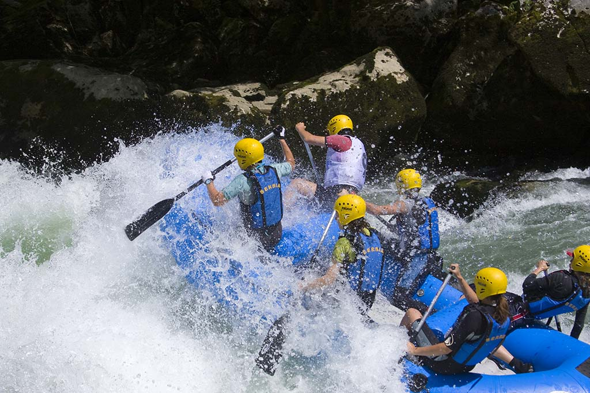

Venture along the streams. Connect your passion with Rafting!
Popular Trips: BEST Rafting Packages
Boondettene Waterway
Boondettene Waterway is the top place for junior group rafting, its wide and small waves set a favourable trip for rafters who wanted to experience rafting and spend an exciting time with friends and family.

Mrstiese River
Mrstiese River is an adventurous rafting site for intermediate rafters, its narrow nature creates stronger waves, but stronger current at the same time. If you seek a thrilling experience, this is the place!

Sicuthirin Channel
Sicuthirin Channel is the Himalayas of rafting, one of the master level sites in the world. Yet, if you are a master in rafting and you want the truest experience of rafting, you are welcome to challenge this master site!

Drope Falls
Drope Falls is a family rafting site, though not too much of a thrilling experience, but along the site, you can view the amazing scenary of the Drope Falls. The best place to take your kids to for a holiday.
Rafting Packages


We offer much more rafting packages at different sites: